|
Yifan Zhan (詹亦凡)
I'm currently a D1 student at the Graduate School of Information Science and Technology (IST), The University of Tokyo, supervised by Prof. Yinqiang Zheng. |
{kind=link}
ResearchI work on computer vision and computer graphics, with a particular focus on 3D vision. My research interests primarily involve 3D reconstruction, neural rendering, and human avatars. |

|
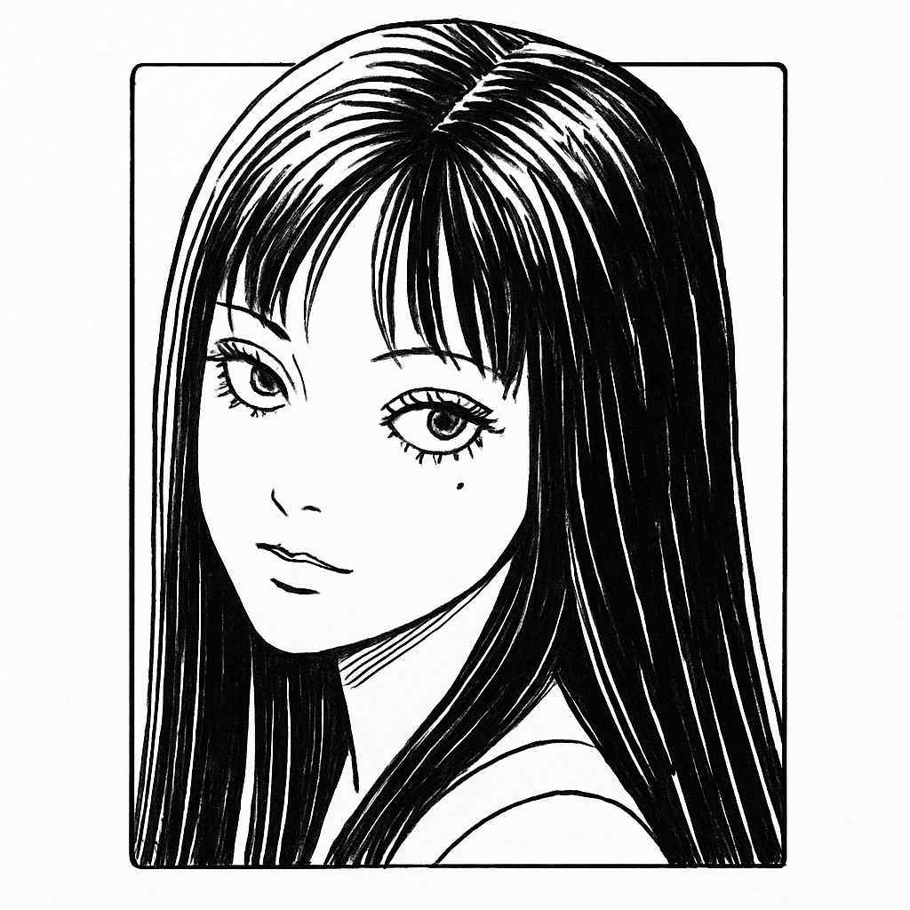 ToMiE: Towards Explicit Exoskeleton for the Reconstruction of Complicated 3D Human Avatars Yifan Zhan, Qingtian Zhu, Muyao Niu, Mingze Ma, Jiancheng Zhao, Zhihang Zhong, Xiao Sun, Yu Qiao, Yinqiang ZhengICCV, 2025 Paper / Code ToMiE extends the SMPL skeleton by growing external joints for modeling hand-held objects and loose-fitting clothing with explicit animation. |
| 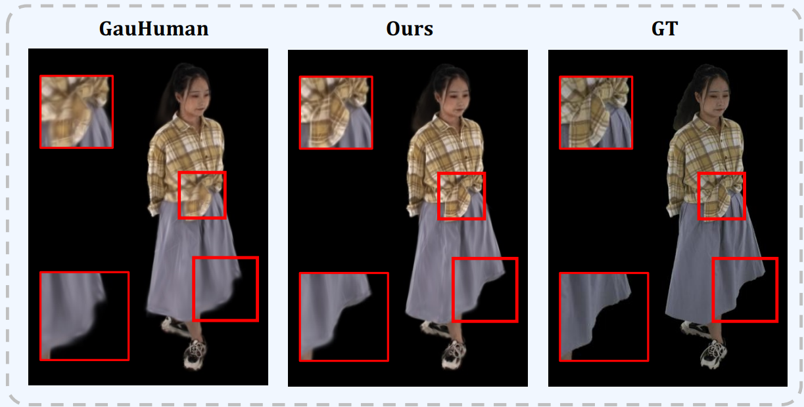 |
Sequential Gaussian Avatars with Hierarchical Motion Context
Wangze Xu, Yifan Zhan, Zhihang Zhong, Xiao Sun ICCV, 2025 Paper By integrating spatial poses and temporal motion hierarchically, GAST improves the accuracy of non-rigid warping and 3DGS rendering. |
| 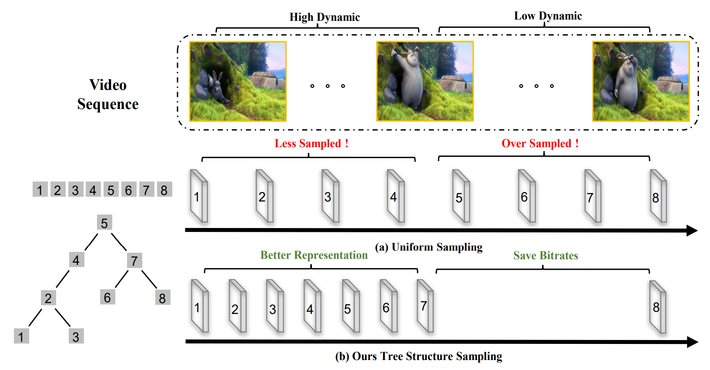 |
Tree-NeRV: A Tree-Structured Neural Representation for Efficient Non-Uniform Video Encoding
Jiancheng Zhao, Yifan Zhan, Qingtian Zhu, Mingze Ma, Muyao Niu, Zunian Wan, Xiang Ji, Yinqiang Zheng ICCV, 2025 Paper Tree-NeRV introduces a binary tree-structured representation with adaptive temporal sampling for efficient and high-quality video reconstruction. |
| 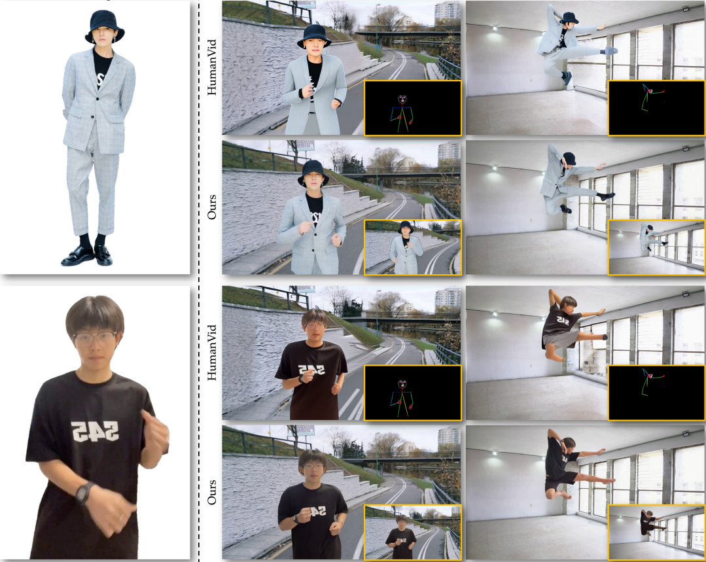 |
AniCrafter: Customizing Realistic Human-Centric Animation via Avatar-Background Conditioning in Video Diffusion Models
Muyao Niu, Mingdeng Cao, Yifan Zhan, Qingtian Zhu, Mingze Ma, Jiancheng Zhao, Yanhong Zeng, Zhihang Zhong, Xiao Sun, Yinqiang Zheng arxiv, 2025 Paper / Code By reframing animation as a restoration task, AniCrafter brings robust character motion to complex backgrounds and poses. |
| 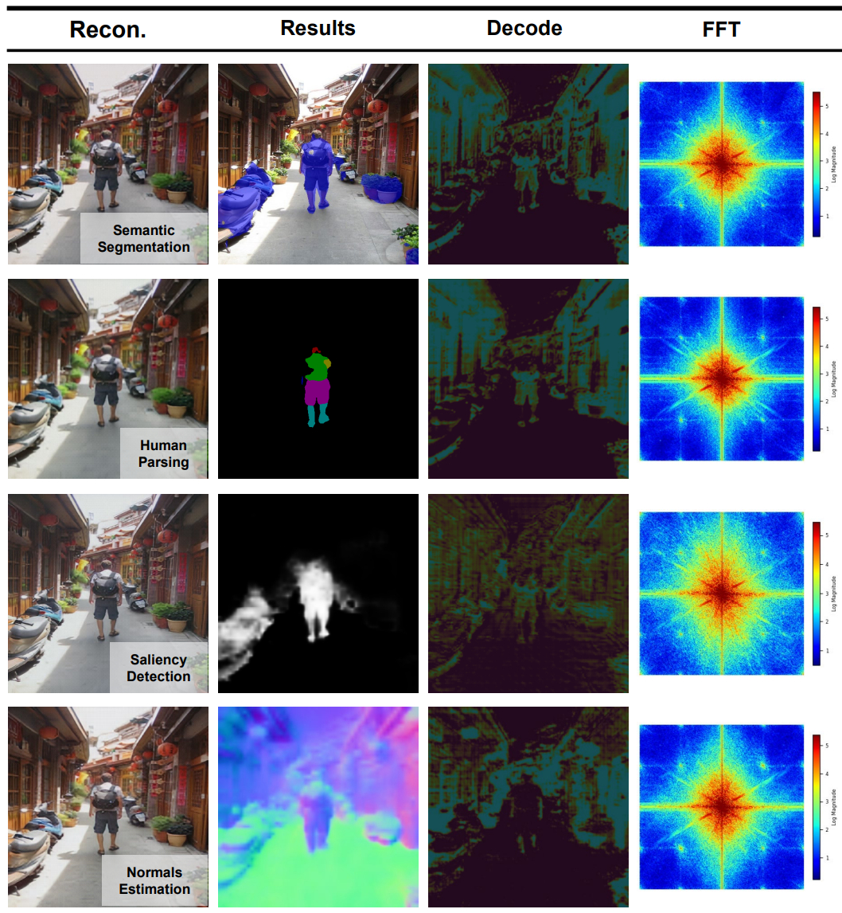 |
All-in-One Transferring Image Compression from Human Perception to Multi-Machine Perception
Jiancheng Zhao, Xiang Ji, Zhuoxiao Li, Zunian Wan, Weihang Ran, Mingze Ma, Muyao Niu, Yifan Zhan, Cheng-Ching Tseng, Yinqiang Zheng arxiv, 2025 Paper An asymmetric adaptor framework bridges learned image compression and multi-task vision with a single compact model. |
| 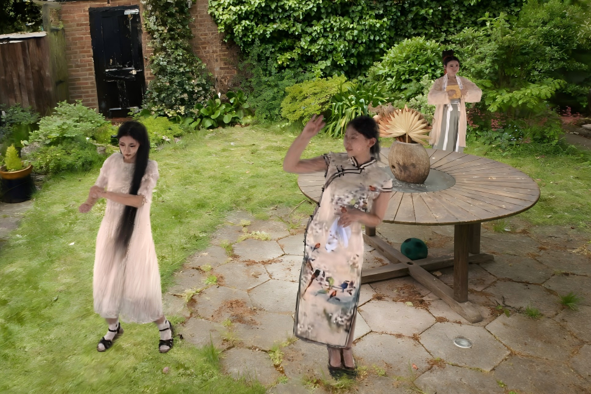 |
R3-Avatar: Record and Retrieve Temporal Codebook for Reconstructing Photorealistic Human Avatars
Yifan Zhan, Wangze Xu, Qingtian Zhu, Muyao Niu, Mingze Ma, Yifei Liu, Zhihang Zhong, Xiao Sun, Yinqiang Zheng arxiv, 2025 Paper / Code R3-Avatar introduces a temporal codebook to unify high-fidelity rendering and animatability for human avatars under limited poses and complex clothing. |
| 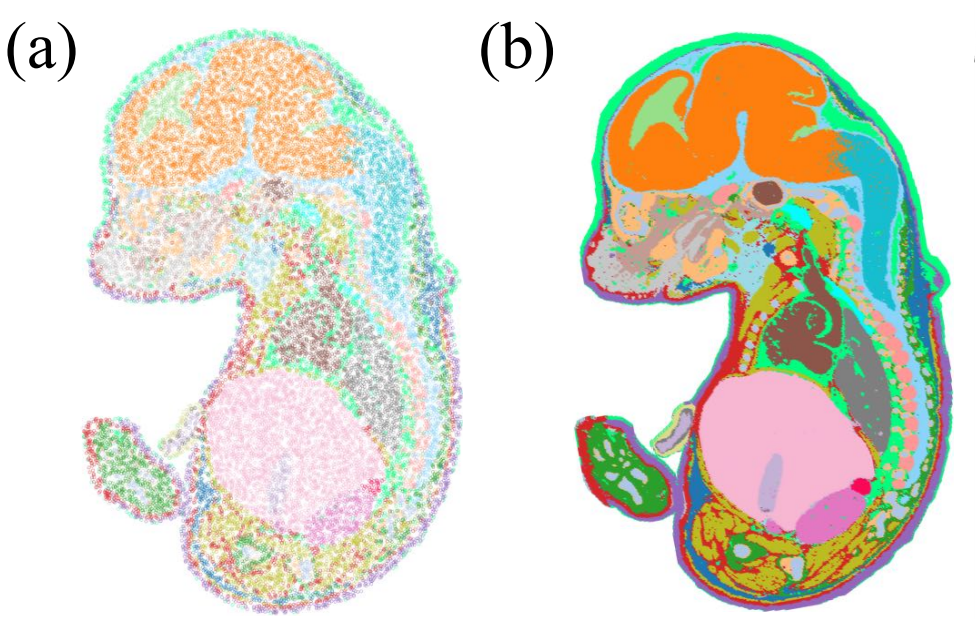 |
SUICA: Learning Super-high Dimensional Sparse Implicit Neural Representations for Spatial Transcriptomics
Qingtian Zhu, Yumin Zheng, Yuling Sang, Yifan Zhan, Ziyan Zhu, Jun Ding, Yinqiang Zheng ICML, 2025 Paper / Code SUICA models spatial transcriptomics in a continuous and structure-aware manner, enriching both spatial density and gene expression fidelity. |
| 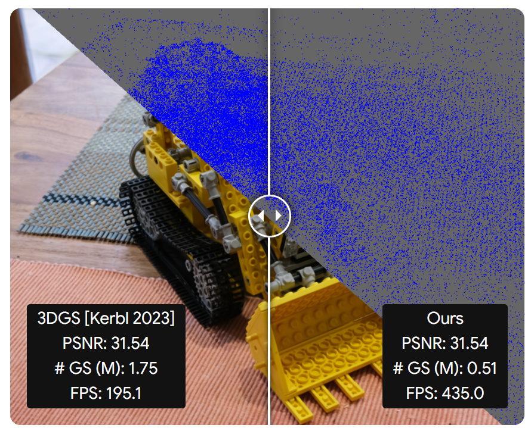 |
Maskgaussian: Adaptive 3d gaussian representation from probabilistic masks
Yifei Liu, Zhihang Zhong, Yifan Zhan, Sheng Xu, Xiao Sun CVPR, 2025 Paper / Code Smarter pruning, better rendering -- mask-based rasterization allows gradient flow to pruned Gaussians for dynamic importance learning. |
| 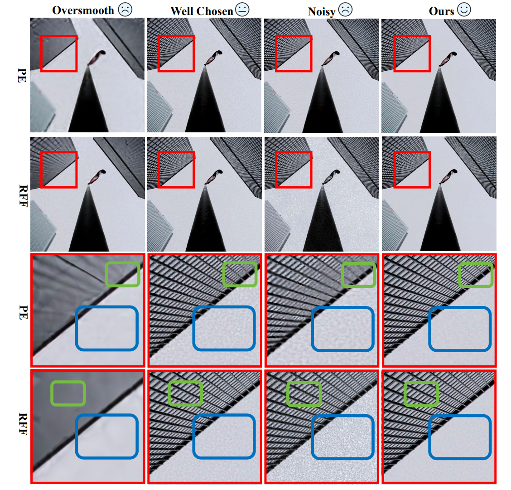 |
Robustifying Fourier Features Embeddings for Implicit Neural Representations
Mingze Ma, Qingtian Zhu, Yifan Zhan, Zhengwei Yin, Hongjun Wang, Yinqiang Zheng arxiv, 2024 Paper Bias-free MLPs as adaptive frequency filters enable more stable and accurate implicit neural representations across diverse tasks. |
| 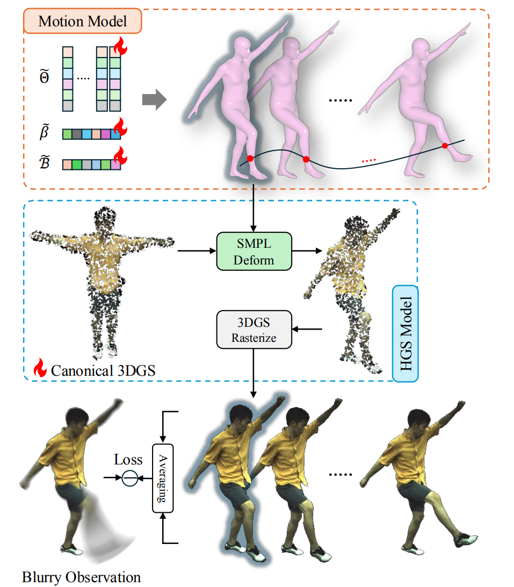 |
Bundle Adjusted Gaussian Avatars Deblurring
Muyao Niu, Yifan Zhan, Qingtian Zhu, Zhuoxiao Li, Wei Wang, Zhihang Zhong, Xiao Sun, Yinqiang Zheng arxiv, 2024 Paper / Code Joint blur modeling and motion estimation enable high-quality 3D Gaussian avatars from real-world multiview footage. |
| 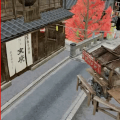 |
RS-NeRF: Neural Radiance Fields from Rolling Shutter Images
Muyao Niu, Tong Chen, Yifan Zhan, Zhuoxiao Li, Xiang Ji, Yinqiang Zheng ECCV, 2024 Paper / Code Rolling shutter-aware modeling enables high-quality novel view synthesis with NeRF from distorted inputs. |
| 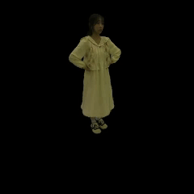 |
Within the Dynamic Context: Inertia-aware 3D Human Modeling with Pose Sequence
Yutong Chen*, Yifan Zhan*, Zhihang Zhong, Wei Wang, Xiao Sun, Yu Qiao, Yinqiang Zheng ECCV, 2024 Paper / Code Inertia-aware delta pose modeling enables realistic appearance dynamics for 3D human rendering across similar poses. |

|
RPBG: Towards Robust Neural Point-based Graphics in the Wild
Qingtian Zhu, Zizhuang Wei, Zhongtian Zheng, Yifan Zhan, Zhuyu Yao, Jiawang Zhang, Kejian Wu, Yinqiang Zheng ECCV, 2024 (Oral) Paper / Code Point-based representation combined with neural restoration makes high-quality rendering easy and robust. |
| 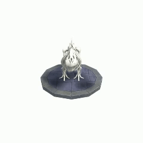 |
KFD-NeRF: Rethinking Dynamic NeRF with Kalman Filter
Yifan Zhan, Zhuoxiao Li, Muyao Niu, Zhihang Zhong, Shohei Nobuhara, Ko Nishino, Yinqiang Zheng ECCV, 2024 Paper A plug-and-play Kalman-filter-based deformation field that boosts dynamic NeRF rendering quality with minimal network overhead. |
| 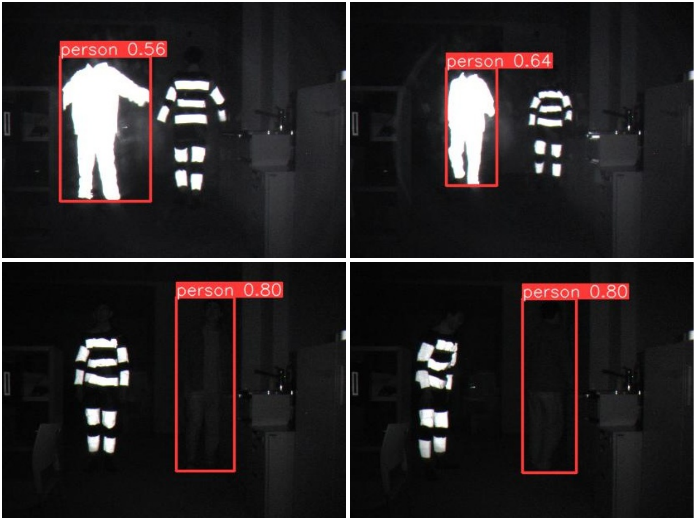 |
Physics-Based Adversarial Attack on Near-Infrared Human Detector for Nighttime Surveillance Camera Systems
Muyao Niu, Zhuoxiao Li, Yifan Zhan, Huy H Nguyen, Isao Echizen, Yinqiang Zheng ACMMM, 2023 Paper / Code An approach that exposes and physically demonstrates attacks on NIR-based surveillance by exploiting material reflectance and sensor sensitivity. |

|
Nerfrac: Neural radiance fields through refractive surface
Yifan Zhan, Shohei Nobuhara, Ko Nishino, Yinqiang Zheng ICCV, 2023 Paper / Code An approach for novel view synthesis through refractive media by estimating refracted rays with learned refractive fields. |
Awards/Scholarships
BOOST NAIS Special Research Scholarship (6 students in Japan), The University of Tokyo, 2024.10 - 2027.09 |